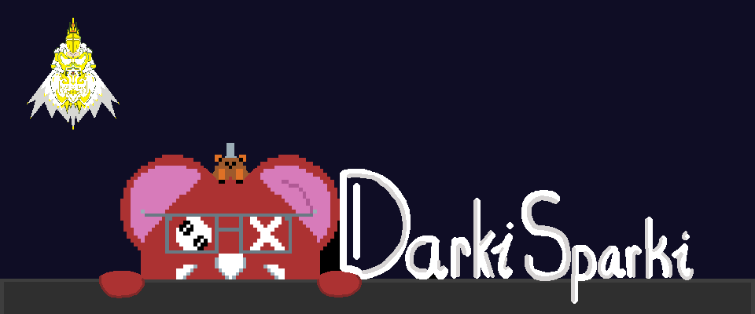

Introduction
Hi, I’m Kevin Varghese — an emerging game developer with a deep love with games. My journey with games began at a young age, not just through playing them and loving every minute, but through appreciating the work happening behind the scenes. The creativity of each aspect drove me to go into making a game are what inspired me to pursue game development myself. In any situation, i am adaptable. Whether that means that handling documentation and presentation, supporting programming tasks, helping with group organization and expectation. I believe that every role contributes to the bigger picture, and I am always ready to step where I am needed Teamwork is one of my core strengths. I value understanding my teammates’ skills so we can deliver a project efficiently and within scope. I also enjoy helping others grow, turning weaknesses into strengths through communication and shared learning. And at the end make sure that my skills can be refined and always be improved. I’m continually improving as a developer and teammate, and I’m excited to contribute to meaningful and well-crafted projects.